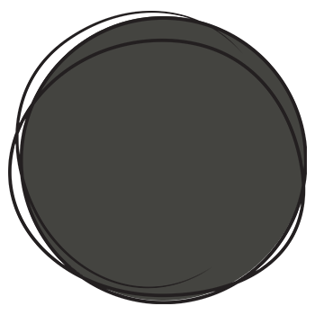

My Resume
It does not matter how long the way is that we are supposed to walk.
As long as we just put one foot in front of the other, we will eventually reach our goals.
Skills
Java

C
HTML, CSS, JavaScript
Python, SQL
LaTeX
Languages
German
English
Russian
Academic background
Studies | October 2016 - March 2021
Bachelor of Science IT at KIT, Germany
University-entrance diploma | October 2007 - June 2015
High-school diploma at the Albert Schweitzer Gymnasium, Germany
Professional background
Hotel Gastronomy | since November 2021
Receptionist at Best Western Hotel, Germany
Administrative Assistant | July 2021 - October 2021
Administrative assistant at "Sportorthopädische Praxis", Germany
Gastronomy | October 2019 - June 2021
Barista at Starbucks, Germany
Gastronomy | November 2015 - June 2016